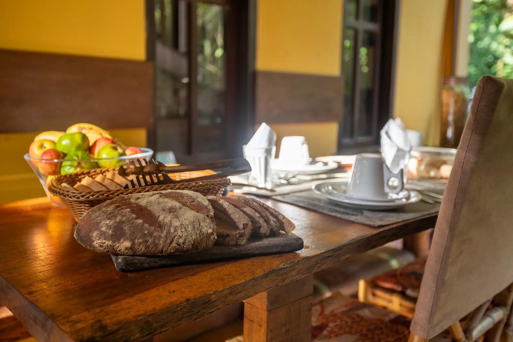
Chapada dos Guimarães · Mato Grosso
Cantos da Mata
Um santuário entre o cerrado e a mata — onde o tempo flui diferente.
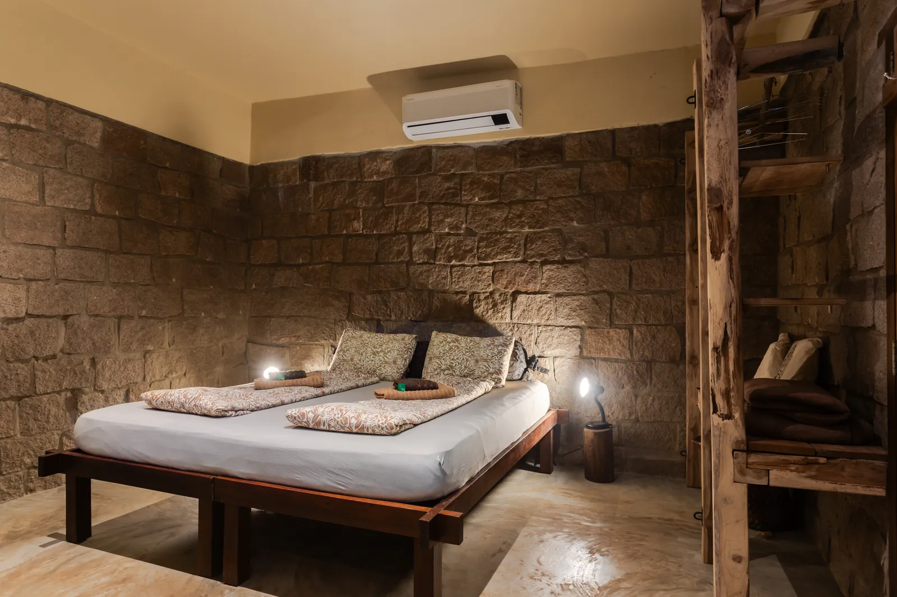
Casa de Pedra · Cantos da MataNossa essência
Entre o céu e a floresta
Cantos da Mata nasceu do desejo de criar um espaço onde a natureza não é cenário — ela é a protagonista. Cada chalé foi pensado para minimizar o impacto e maximizar a experiência.
Aninhada no Vale do Jamacá, em Chapada dos Guimarães, somos um ponto de encontro entre o viajante curioso e a sabedoria da terra. Aqui, entre cachoeiras e paredões de arenito, você desacelera de verdade.
Conheça nossa históriaBem-vindo
"Mais que uma pousada. Um convite para desacelerar, respirar fundo e se reconectar com o que a natureza tem de mais puro."
Por que Cantos da Mata
Três razões para vir
Natureza pura
Cachoeiras cristalinas, trilhas entre cerrado e mata, fauna exuberante a poucos passos do seu chalé.
Desaceleração
Sem pressa. Um espaço projetado para reconectar você com o ritmo da natureza — e com você mesmo.
Acolhimento
Café da manhã incluso, recepção 24h e um time que fala português, inglês e alemão. Você em casa.
Onde você vai descansar
Nossos Chalés
O que nos espera lá fora
Passeios & experiências
Cachoeiras, cavernas de arenito, mirantes de 360º e aventura — guiados por quem conhece cada trilha da Chapada.
Nosso compromisso
Luxo que respeita a terra
Cada decisão passa por um filtro: isso respeita o lugar onde estamos? Construções que se integram à paisagem, materiais locais e práticas que devolvem à natureza mais do que tomam.
Não viemos aqui para conquistar a natureza — viemos para celebrá-la.
Saiba maisO que dizem nossos hóspedes
Experiências vividas
Uma janela para a mata
O lodge em imagens
"Aqui você não é apenas um hóspede, mas um explorador. Cada amanhecer no mirante, cada cascata descoberta, cada noite ao redor da fogueira."— Cantos da Mata
Pronto para vir?
Sua estadia começa aqui
Consulte disponibilidade e planeje sua experiência na Chapada dos Guimarães.
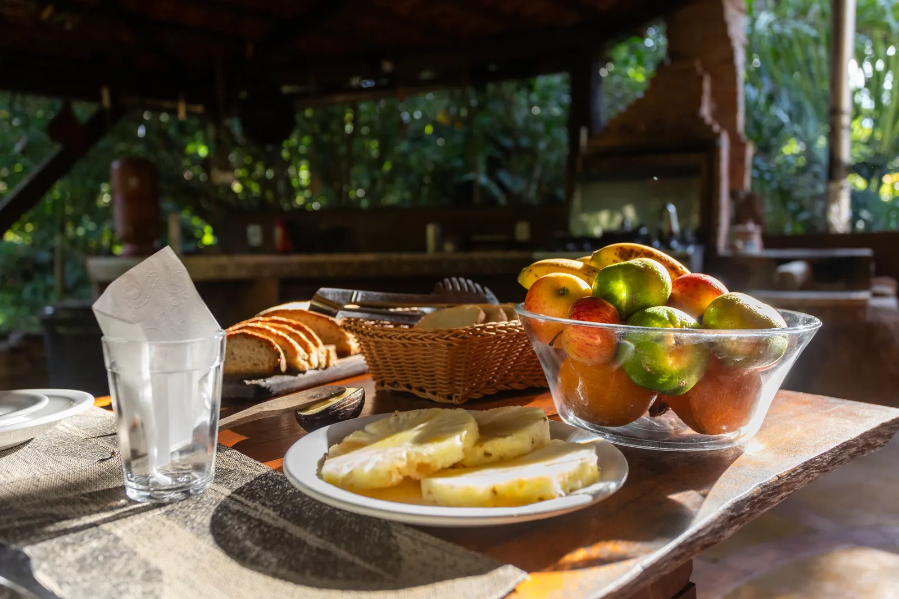
Nosso propósito
A Pousada
Um refúgio na natureza para restaurar corpo, mente e espírito.
Manifesto
Não viemos conquistar a natureza
Cantos da Mata existe para oferecer uma experiência autêntica e transformadora na Chapada dos Guimarães. Acreditamos que a verdadeira hospitalidade está em harmonizar conforto com responsabilidade ambiental.
Cada detalhe foi pensado para minimizar impacto e maximizar conexão. Aninhados no Vale do Jamacá, recebemos viajantes do Brasil e do mundo — em português, inglês e alemão — com a mesma vontade de mostrar a beleza do cerrado.
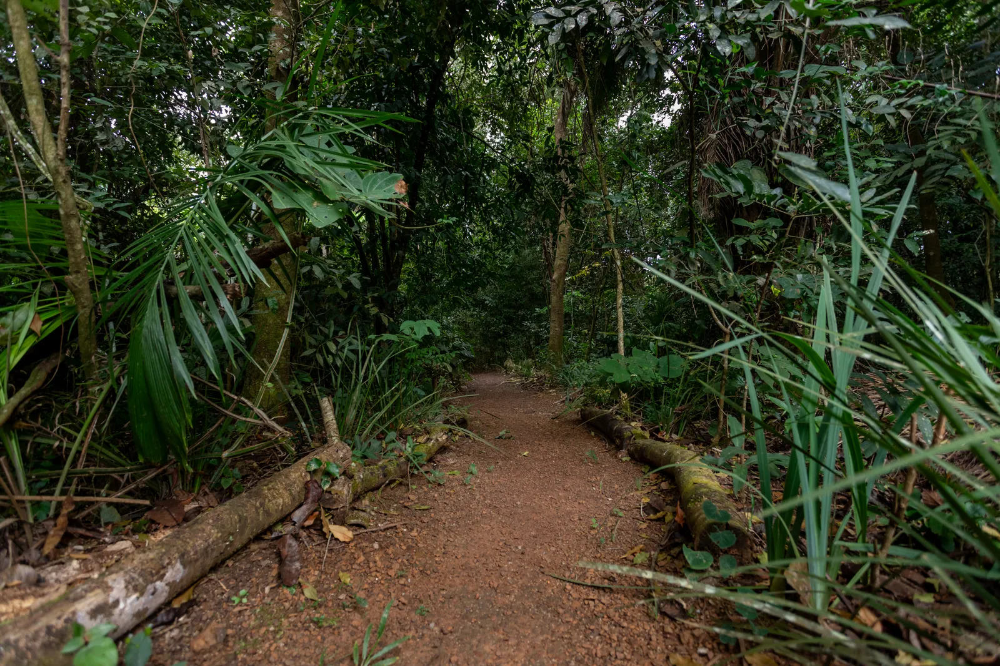
Sustentabilidade
Luxo responsável
Integração à paisagem
Construções pensadas para se integrar ao cerrado, respeitando a topografia e a vegetação nativa do Vale do Jamacá.
Consumo consciente
Práticas de baixo impacto no dia a dia da pousada — do descarte às rotinas de limpeza e ao uso da água.
Economia local
Parcerias com guias e operadores da Chapada, valorizando quem conhece e cuida do território.
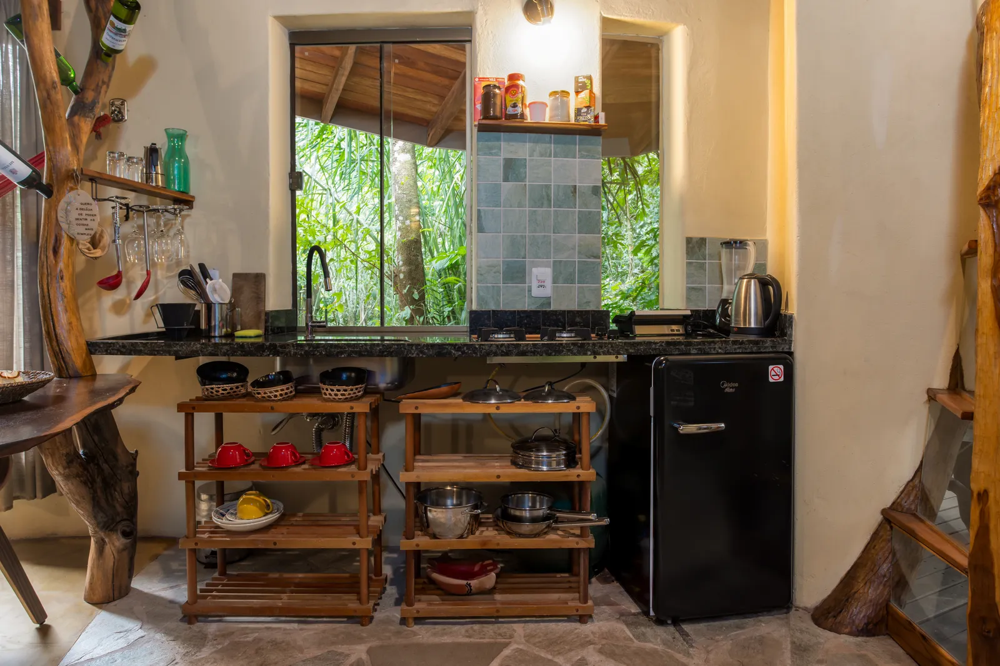
Onde você vai descansar
Nossos Chalés
Cada refúgio é uma obra à parte — todos imersos na mata, todos com café da manhã incluso.
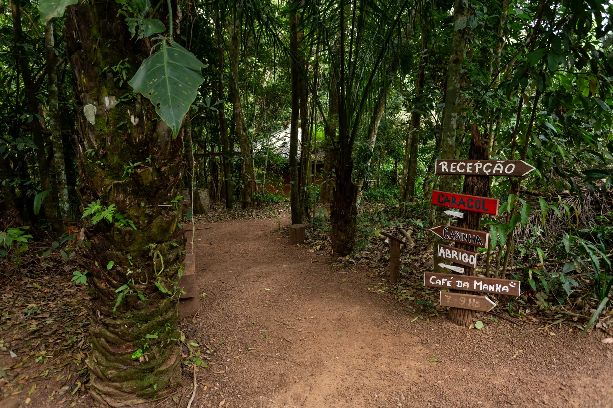
A Chapada te espera
Passeios
Cachoeiras, cavernas de arenito, mirantes e aventura. Roteiros reais da região, organizados pela recepção.
A Chapada dos Guimarães guarda alguns dos cenários mais espetaculares do Brasil. Montamos roteiros para todos os ritmos — do banho tranquilo numa lagoa à descida de duck nas corredeiras.
Monte seu roteiro
Fale com a recepção
Combinamos os passeios de acordo com sua estadia, ritmo e interesses. Biking e outros passeios sob consulta.
Planejar meus passeios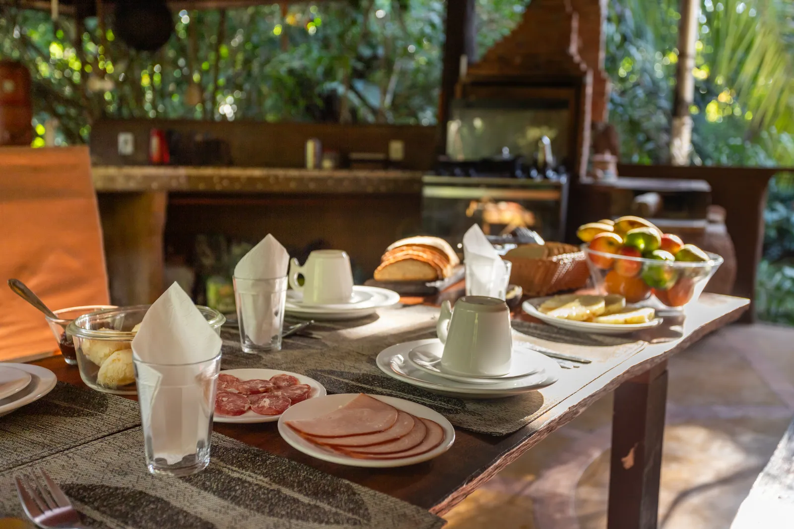
Sabores da Chapada
Gastronomia
A manhã começa devagar, com um café caprichado. À noite, jantar sob encomenda e churrasco sob as estrelas.
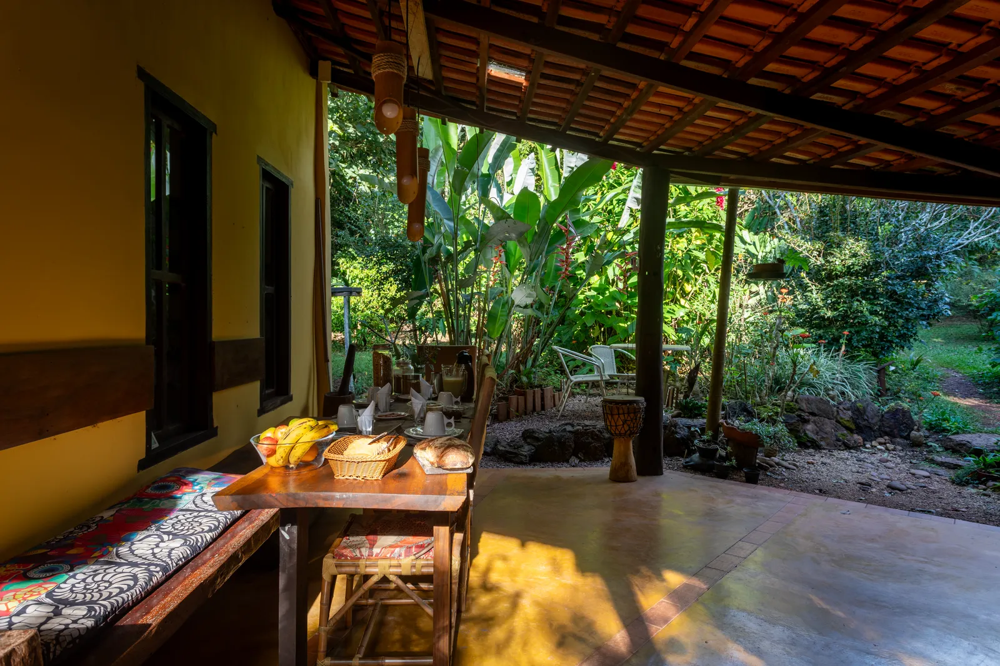
Café da manhã
A manhã sem pressa
Incluso na diária e servido das 7h às 9h, nosso café da manhã reúne o que a região tem de melhor para começar bem o dia — antes de cair na trilha ou simplesmente contemplar a mata.
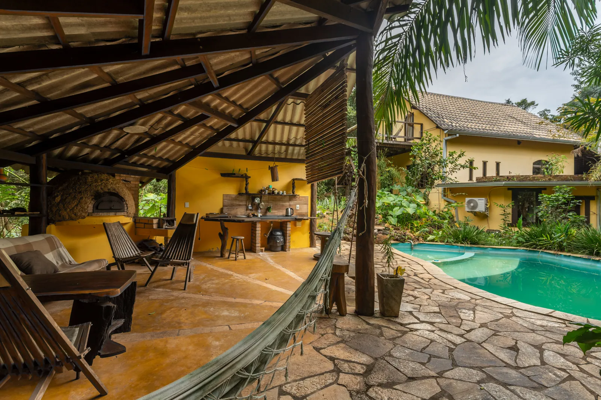
Jantar & churrasco
Noites à luz do cerrado
O jantar é servido sob encomenda — basta avisar com um dia de antecedência. Às 19h, por R$ 60 por pessoa, com a opção de noites de churrasco sob consulta.
Reservar jantar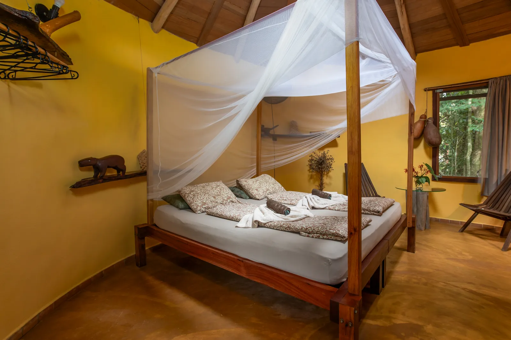
O lodge em imagens
Galeria
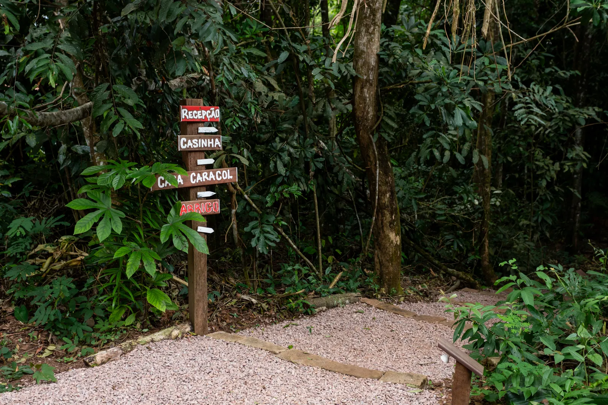
Estamos prontos para receber você
Contato & Reservas
Prefere escrever?
Envie uma mensagem
Antes de chegar